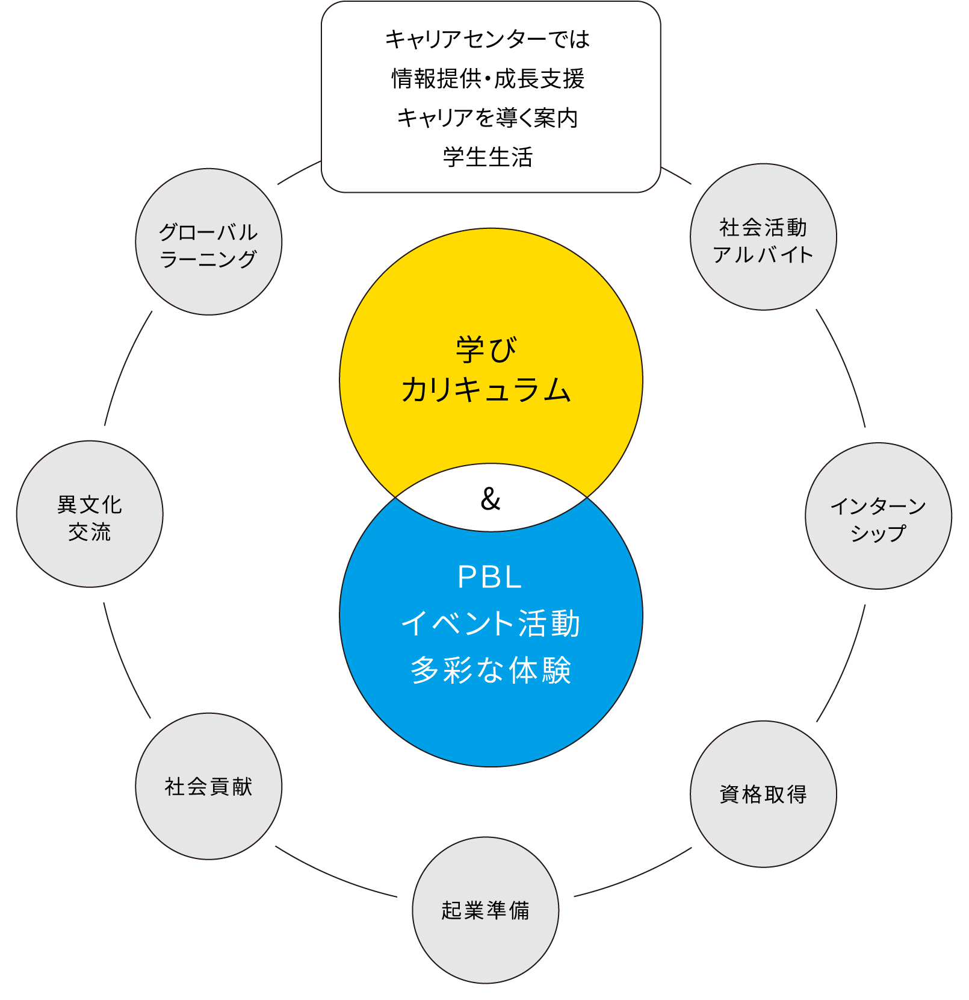
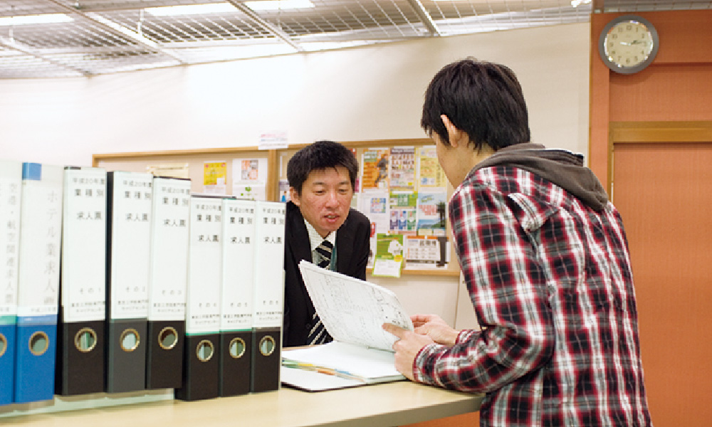
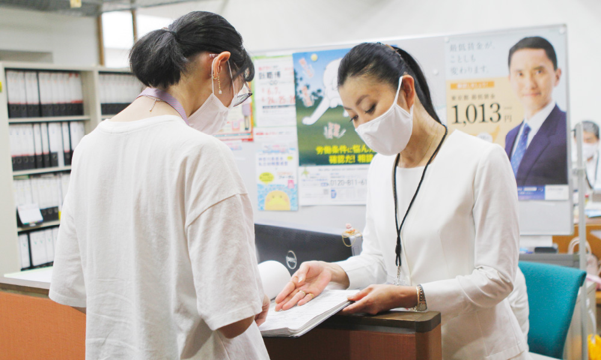
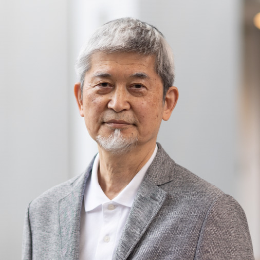

学生の「今」と
「未来」を支える
キャリアセンター
- テクノスカレッジの
キャリアセンターの考え方 - テクノスカレッジのキャリアセンターでは、入学から卒業までのキャリアはもちろん、社会に出た後のキャリアもサポートしています。いつでも学生たちが気軽に相談できる環境を整えています。
キャリアセンターの目的
キャリアセンターでは
どんなことができるの？
キャリアナビカウンター
キャリアナビカウンターでは、いつでも将来の進路や人生の悩みを専属職員に相談することができます。どんな内容でもＯＫ！気軽に足を運んでください。

個別相談で、
キャリアに対する助言
キャリアセンターでは、学生一人ひとりに対して個別相談も。皆さんが自分で自分のキャリア形成をするためのサポート役になるのがキャリアセンターのスタッフの使命ですので、どんどん活用してください。

- CAREER CENTER
- 開室
時間 - 9：00 – 17：00
土曜日、日曜日、祝日
（授業を行う休業日は除く）は閉室となります。
キャリアセンター
職員紹介
私たち就職担当が中心となり、
教員・講師・職員一丸となって、学生の就職を
サポートしていきます。
テクノスカレッジで「選ぶ力」を磨き
「キャリア＝人生」を描いてほしい。
キャリアとは「人生」であり、人生は「選ぶ」の連続です。キャリアセンターでは、学生たちが一人ひとりの夢や目標に近づくための「選ぶ力」を磨くサポートをしています。テクノスの多彩な学びを通して「広い視野」「未来を見据える力」「グローバルな視野」を身につけることで「選ぶ力」を養い、環境が目まぐるしく変化する予測不能な現代においても、夢や目標に向かって真っ直ぐ進み続けてほしいと思います。
- キャリアセンター長
- 若林 健太郎

- キャリアセンター主任
- 鈴木 美穂
- キャリアセンター
- 葛原 加奈子

- キャリアセンター
- 今泉 康治
- キャリアセンター
- 宮鍋 涼
- キャリアセンター
- 中川 美沙
就職実績一覧
※企業名は順不同
芸術・エンターテイメント系
ヒビノ㈱／デルタ音響㈱／㈱日本エムエスアイ／㈱クレア・ジャパン／㈱共立／㈲サウンドアクション／㈱綜合舞台／㈱東舞トータルサービス／㈱バンケット・プランニング／㈱岡田舞台／㈱東京舞台照明／㈱ハートス／㈱テルミック／㈱ワンダーライト／㈱シエロ／劇団四季／㈱ケイエムステーション／㈱フルスペック／㈱ジェー・エス・エス／㈱クリエイティブ・アート・スィンク／㈱ディスクガレージ／㈱ハンズオン・エンタテインメント／㈱東芸エンタテイメンツ／㈱ギミック／㈱特効／㈱スターダストプロモーション／㈱宝塚舞台／㈱バンダイナムコエンターテインメント／木下サーカス㈱／NAGANO CLUB JUNK BOX／㈱シブヤテレビジョン／㈱HALF H･P STUDIO／㈱サウンドインスタジオ／㈱デルファイサウンド／㈱神南スタジオ／㈱タバック／㈱東北新社／麻布プラザ㈱／プロセンスタジオ㈱／㈱コスモ・スペース／㈱音響ハウス／ヌーベルアージュ㈱／㈱ザ・チューブ／㈱サウンド・シティ／㈱A-1 Pictures／㈱ニユーテレス／㈱テクノマックス／㈱東通／㈱MFG／㈱FILM／㈱エキスプレス／UUUM㈱／㈱81プロデュース／㈱青二プロダクション／㈱マウスプロモーション／㈱シグマ・セブン／㈱ソニー・ミュージックアーティスツ／㈱EARLY WING／㈲プロ・フィット／㈱Millennium Pro／㈱プロダクション・エース／俳協（東京俳優生活協同組合）／㈱アトミックモンキー／劇団俳優座／劇団文学座／劇団青年座／演劇集団 円／㈱オスカープロモーション／㈱麗タレントプロモーション／劇団NLT／Stunning artists academy／㈱ジェイズプロデュース／㈲ブロードウェイ・バウンズ その他多数
芸術・クリエーター系
㈱スクウェア・エニックス／㈱カプコン／㈱キャメロット／㈱ユークス／㈱プレックス／㈱フロム・ソフトウェア／㈱壽屋／㈱ランドマック／㈱タナカ／㈱ネイキッド／㈱セガホールディングス／㈱コナミデジタルエンタテインメント／リズム＆ヒューズ・スタジオ（米国）／㈱バンダイナムコエンターテインメント／㈱ソニー・インタラクティブエンタテインメント／㈱日テレ アックスオン／㈱オムニバス・ジャパン／㈱プレミアムエージェンシー／㈱円谷プロダクション／㈲林デジタル工務店／GMOリサーチ㈱／㈱トライエース／㈱日テレ・テクニカル・リソーシズ／マックレイ㈱／コロニーインタラクティブ㈱／㈱千明社／㈱ACO／㈱泉放送制作／㈲卯の字屋／㈱キャメルスタジオ／㈱ポパル／㈱ライデンフィルム／㈱ローヤル企画／㈱テレコム・アニメーションフィルム／㈱スタジオよんどしい／東映アニメーション㈱／㈱マッドハウス／㈱プロダクション・アイジー／ユーフォーテーブル㈲／㈱ゴンゾ／㈱シグマ／㈱東京スタイル／㈱ワールド／㈱ホワイト.ファット.グラフィックス／Link-UP DESIGN／㈱トキオン／大日本印刷㈱／㈱朝日広告／㈱白組／㈱シャトレーゼ その他多数
スポーツ・教育系
㈱コナミスポーツライフ／㈱THINKフィットネス（ゴールドジム）／住友不動産エスフォルタ㈱／ゼビオ㈱／㈱メガスポーツ／㈱エービーシー・マート／㈱シミズオクト／アシックスジャパン㈱／㈱ブラック＆ブルーストライプス（インテルアカデミージャパン）／㈱アスリートクラブ熊本（ロアッソ熊本）／㈱ジャクパ／㈱エール・クリエート／国立保育会／東京工学院きしゃぽっぽ保育園／なみのり第二保育園／飯田中央保育園／㈱ポピンズ（保育所）／むさし保育園／谷里保育園／敬愛学園（保育園）／府中愛児園／しんあい保育園／なかよしの森保育園／地球のひろば藤幼稚園／調布白菊幼稚園／あけの星幼稚園／㈱バディ企画研究所（バディスポーツ幼児園）／第一富士幼稚園／セント・ベル幼稚園／東京緑ヶ丘幼稚園／多摩なかよし幼稚園／菅幼稚園／立川かしの木幼稚園／社会福祉法人国立保育会／朝陽学園（施設）／調布市社会福祉事業団なごみ／星美ホーム（施設）／㈱総合体育研究所（幼児体育）／フットボウズ・フットボール（幼児体育）／サンリオピューロランド（テーマパーク）／キッザニア東京（テーマパーク）／㈱ベネッセコーポレーション／どろんこ第二児童館／調布市社会福祉事業団（施設）／東京都社会福祉事業団（施設）／㈱こどもの森／神奈川県警（警察官）／埼玉県警（警察官）／警視庁（警察官）／東京消防庁（消防官）／埼玉川口市役所・消防職／自衛官／東日本旅客鉄道㈱／セコム㈱／㈱リンク・セオリー・ジャパン／㈱日本水泳復興会／ミズノスポーツサービス㈱／㈱ヴァンフォーレ山梨スポーツクラブ／アディダスジャパン㈱／㈱KOHATAホールディングス（エニタイム）／㈱湘南ベルマーレ／㈱横浜フリエスポーツクラブ（横浜FC）／東京都公立小学校教員（練馬区／葛飾区／調布市）／神奈川県公立小学校職員（相模原市）／私立むさしの学園小学校教員／東京都私立高校教員（保健体育） その他多数
工学・情報系
㈱三井ホームデザイン研究所／田中土建工業㈱／大成住宅販売㈱／㈱池下設計／日本国土開発㈱／㈱アキュラホーム／㈱三宅建築設計事務所／㈱テラ設計工房／㈱久慈建築設計事務所／㈱大明建設／東京ミサワ建設㈱／菊池建設㈱／㈱田中建設／㈱藤田建装／タマホーム㈱／㈱センチュリーホーム／㈱アイダ設計／㈱ハウスケア／㈱長谷工リフォーム／㈱長谷工スマイルコミュニティ／㈱HIRO建築設計／㈱MDI／日本住宅ツーバイ㈱／誠賀建設㈱／㈱飯田産業／㈱栄伸建設／三井ホームエンジニアリング㈱／東洋建設㈱／工藤建設㈱／㈲一敬／山梨建鉄㈱／㈱デイワイ／㈱水雅／㈱小川建設／髙松テクノサービス㈱／㈱グランドサービス／ヤマギシリフォーム工業㈱／㈱天野家具／ファーストカルデア㈱／㈱富士住建／㈱トーシンパートナーズ／㈱マルイ／㈱アクタス／㈱モーリショップ／㈱イルムスジャパン／イケアジャパン㈱／大成建設㈱／㈱アントレックス（VICEVERSA）／㈱島忠／㈱オフィスネット／東京ガス㈱／㈱LIXIL／パナソニック ホームズ㈱／㈱ライフ設計事務所／㈱C.P.O設計／㈱ビルドアート／ニッカホーム㈱／ヤマトシステム開発㈱／キヤノン電子テクノロジー㈱／サン・エム・システム㈱／データ・マネージメント㈱／ニッコクソフト㈱／㈱アプリケーションプロダクト／㈱アリカ／㈱エス・エス・シー／㈱クアトロシステム／㈱サンエンジー／㈱システムエキスパート／㈱トータルオーエーシステムズ／㈱プログレスネットワークス／㈱マネジメント・ブレインズ／㈱ユーベスト／東京多摩青果㈱／東都システム開発㈱／日本ソフト技研㈱／関越ソフトウェア㈱／㈱新日テクノロジー／北友ビジネス㈱／㈱エクシーズ／㈱システク／ディーコム㈱／東京電力ホールディングス㈱／東日本旅客鉄道㈱（JR東日本）／東海旅客鉄道㈱（JR東海）／京王電鉄㈱／東京地下鉄㈱（東京メトロ）／㈱関電工／㈱NHKビジネスクリエイト／㈱小田急ビルサービス／㈱京王設備サービス／野村不動産パートナーズ㈱／住友不動産㈱／三菱地所プロパティマネジメント㈱／㈱マルイファシリティーズ／（財）関東電気保安協会／㈱高島屋ファシリティーズ／㈱エヌ・ティ・ティ エムイー（NTT-ME）／サンワコムシステムエンジニアリング㈱／東京島津科学サービス㈱／日立コンシューマ・マーケティング㈱／新日本電子㈱／菊水電子工業㈱／三和電子㈱／㈱システムワン／三波工業㈱／日本電業工作㈱／㈱計測技術研究所／ANAスカイビルサービス㈱ その他多数
経営・法律・エクステンション系
㈱ヨドバシカメラ／タマホーム㈱／イオン㈱／東日本旅客鉄道㈱（JR東日本）／㈱エイチ・アイ・エス／㈱プリンスホテル／東京急行電鉄㈱／東京都公立小学校教員（練馬区／葛飾区／調布市）／神奈川県公立小学校職員（相模原市）／私立むさしの学園小学校教員／社会福祉法人 国立保育会／社会福祉法人 敬愛学園／㈱日本保育サービス／田無いづみ幼稚園／㈱京王子育てサポート／東京工学院きしゃぽっぽ保育園／㈱小学館集英社プロダクション／綜合警備保障㈱／日本たばこ産業㈱／富士ソフト㈱／あすか信用組合／ノバルティス ファーマ㈱／高塚司法書士事務所／衆議院議員石原宏高事務所／宮城県警／日本郵政㈱／大多喜町役場／㈱M-TEC／㈱欅ホールディング／やまと法律事務所／あさみ法律事務所／㈱スタート／アシストライズ㈱／NTTエレクトロニクス㈱／マネージメントサービス㈱／ウェブテクノロジー㈱／㈱システム・ランド／住友生命保険相互会社／青木信用金庫／館山商工会議所／㈱長谷工リフォーム／㈱スーパーみらべる／税理士法人テラス／東京都私立高校教員（保健体育） その他多数
エアライン・空港関連
日本航空／全日本空輸／中国東方航空／中国南方航空／アシアナ航空／日本トランスオーシャン航空／スカイマーク／フジドリームエアラインズ／スターフライヤー／ソラシドエア／AIRDO／ジェットスター航空／Peach Aviation／エアージャパン／ユナイテッド航空／ガルーダ・インドネシア航空／スカンジナビア航空／ルフトハンザドイツ航空／アリタリア－イタリア航空／フィンランド航空／マレーシア航空／カタール航空／エバー航空／エア・カナダ／シンガポール航空／デルタ航空／エールフランス／フィリピン航空／タイ国際航空／エミレーツ航空／エティハド航空／KLMオランダ航空／スイスインターナショナルエアラインズ／キャセイパシフィック航空／大韓航空／ブリティッシュ・エアウェイズ／エアアジア／春秋航空日本／ANAエアポートサービス／ANA成田エアポートサービス／JALスカイ／全日空商事デューティーフリー／ANAテレマート／ANAエアロサプライシステム／羽田旅客サービス／空港ターミナルサービス／東京国際エアカーゴターミナル／羽田エアポートエンタープライズ／羽田タートルサービス／スイスポートジャパン／空港協力事業／空港保安事業センター／ワールドエアアンドシーサービス／JALグランドサービス／アシアナスタッフサービス／韓進インターナショナルジャパン／エアポートカーゴサービス／JALカーゴサービス／ドリームスカイ名古屋／JALスカイエアポート沖縄／アエロフロート・ロシア国際航空／中華航空／ANA中部空港／Kグランドサービス／羽田エアグランドサービス／羽田空港サービス その他多数
ホテル・レストラン関連
帝国ホテル／ホテルオークラ東京／ホテルニューオータニ／京王プラザホテル／プリンスホテル／ANAインターコンチネンタルホテル東京／ヨコハマグランドインターコンチネンタルホテル／グランドニッコー東京台場／赤坂エクセルホテル東急／羽田エクセルホテル東急／ザ・キャピトルホテル東急／ホテル椿山荘東京／パレスホテル／ホテルグランドパレス／ヒルトン東京お台場／日本ホテル（JRグループ・ホテルメトロポリタン）／グランド ハイアット 東京／パーク ハイアット 東京／ザ・リッツ・カールトン東京／マンダリンオリエンタル東京／ヒルトン東京／ザ・ペニンシュラ東京／ロイヤルパークホテル／横浜ロイヤルパークホテル／リーガロイヤルホテル東京／シャングリ・ラ ホテル 東京／ウェスティンホテル東京／ミリアルリゾートホテルズ／東京ベイ舞浜ホテル／横浜ベイホテル東急／シェラトン・グランデ・トーキョーベイ・ホテル／アンダーズ東京／ヒルトン東京ベイ／ホテル日航成田／浦安ブライトンホテル東京ベイ／富士屋ホテル／万平ホテル／星野リゾート／ハイランドリゾート ホテル＆スパ／ホテルモントレ／ザ・ウィンザーホテル洞爺 リゾート＆スパ／ハイアットリージェンシー箱根 リゾート＆スパ／住友不動産ヴィラフォンテーヌ／シギラリゾート／森トラスト・ホテルズ&リゾーツ／ホテルエピナール那須／ストリングス ホテル東京 インターコンチネンタル／東京ドームホテル／山の上ホテル／ハウステンボス／リゾートトラスト／アパホテル／六本木ヒルズクラブ／KIHACHI／うかい／なだ万／TERAKOYA／ハレクラニ沖縄／アマネム その他多数
ブライダル関連
八芳園／リビエラ／曽我／エスクリ／プリモ・ジャパン／ベストブライダル／アニヴェルセル／ワタベウェディング／明治記念館／TAKAMI BRIDAL／ホテル雅叙園東京／ホテル椿山荘東京／ユミカツラインターナショナル／ブライダリウム ミュー／クラウディアコスチュームサービス／ハツコエンドウウェディングス／フォーシス アンド カンパニー／モリノブライズ／テイクアンドギヴ・ニーズ／ベスト・アニバーサリー／ワールドサービス／JUNO／日比谷花壇／東芸エンタテイメンツ／コムウェル／杢目金屋／プリモジャパン／ケイウノ／ニューアート・シーマ／うかい その他多数
旅行・鉄道・交通関連
東日本旅客鉄道（JR東日本）／東海旅客鉄道（JR東海）／北海道旅客鉄道（JR北海道）／日本貨物鉄道（JR貨物）／東京地下鉄（東京メトロ）／首都圏新都市鉄道（つくばエクスプレス）／西武鉄道／京王電鉄／京成電鉄／埼玉高速鉄道／関東鉄道／ジェイアール東海パッセンジャーズ／京浜急行電鉄／東武ステーションサービス／東武インターテック／東武エンジニアリング／東急電鉄／JTB首都圏／JTBビジネスネットワーク／JTBビジネストラベルソリューションズ／JTB伊勢丹トラベル／トラベルプラザインターナショナル（JTBグループ）／PTS（JTBグループ）／ソニーコーポレートサービス／近畿日本ツーリスト首都圏／日本旅行／びゅうトラベルサービス／京王観光／ジャルパック／小田急トラベル／クラブツーリズム／読売旅行アクティブ／JR東日本サービスクリエーション（JR東日本グリーンアテンダント・グランクラスアテンダント）／東武トップツアーズ／エイチ・アイ・エス（H.I.S）／阪急トラベルサポート／農協観光／はとバス／東都観光／国際自動車（観光バス）／ロイヤルウイング／商船三井客船／TDKサービス（旅行事業部）／近鉄航空配送／東芝ツーリスト／JALナビア／京王バス その他多数
一般企業
三井物産トレードサービス／三越伊勢丹／丸井グループ／ルミネ／イクスピアリ／アール・エス・シー（サンシャインシティインフォメーション）／サピエント（日産PRスペシャリスト）／埼玉トヨタ自動車（レクサスショールーム）／BMW（BMWショールーム）／ホンダ自動車販売／ダイハツ東京販売／パナソニックセンター東京 リスーピア／ジェイアールシステム・エンジニアリング／コンチネンタルファーイースト／ケン・コーポレーション／エストネーション／エスティーローダー／コーセー（JILL STUART）／エキップ（RMK）／アルビオン／TIFFANY＆CO．／資生堂／サマンサタバサジャパンリミテッド／レッセ・パッセ／オンワード樫山／たかの友梨ビューティークリニック／東京動物園協会（葛西臨海水族園、多摩動物公園）／明治安田生命保険相互会社／三井不動産ビルマネジメント／フジクラ／柿沼金属精機／矢崎総業／BRICK’S／GUCCI／COACH その他多数
海 外
ホテルオークラ アムステルダム（オランダ）／ホテルオークラ マカオ(中国)／Legend Hotel（ベトナム）／ザ・リッツカールトン ミレニアム シンガポール／Six Senses Hideway-Ninn Van Bay-Resort（ベトナム）／ソフィテル フィリピンプラザ マニラ（フィリピン）／Shangri-La Hotel,Singapore（シンガポール）／Cititel Mid Valley Hotel Kuala Lumpur（マレーシア）／Sripanwa PHUKET（タイ）／BAROS MALDIVES（モルジブ）／Kanuhura（モルジブ）／ADDAARAN（モルジブ）／ADAARAN Prestige VADOO MALDIVES（モルジブ）／HASHIMOTO CORPORATION SDN.BHD（ブルネイ）／AMIANA on the bay（ベトナム）／Caravelle SAIGON Hotel（ベトナム）／AYANAR Resort&Spa BALI（インドネシア） その他多数
関連するその他の記事
キャリアTopics
一覧へ現在、Topicsはありません。